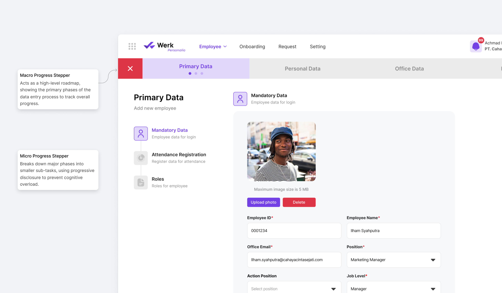
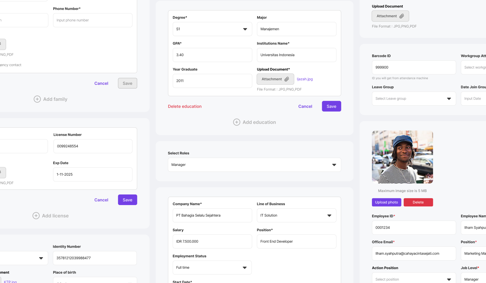
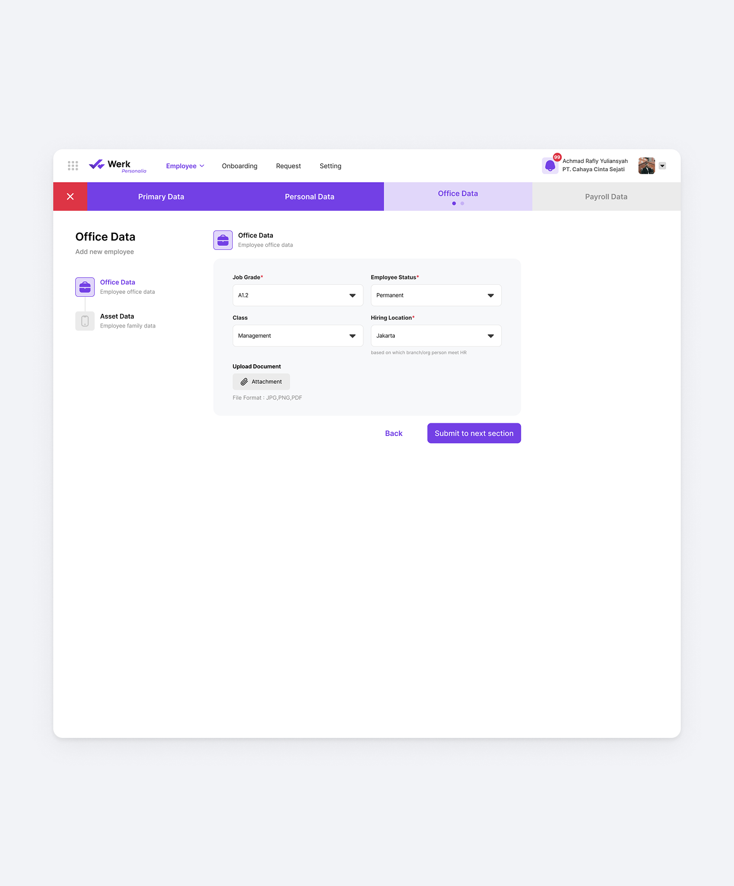
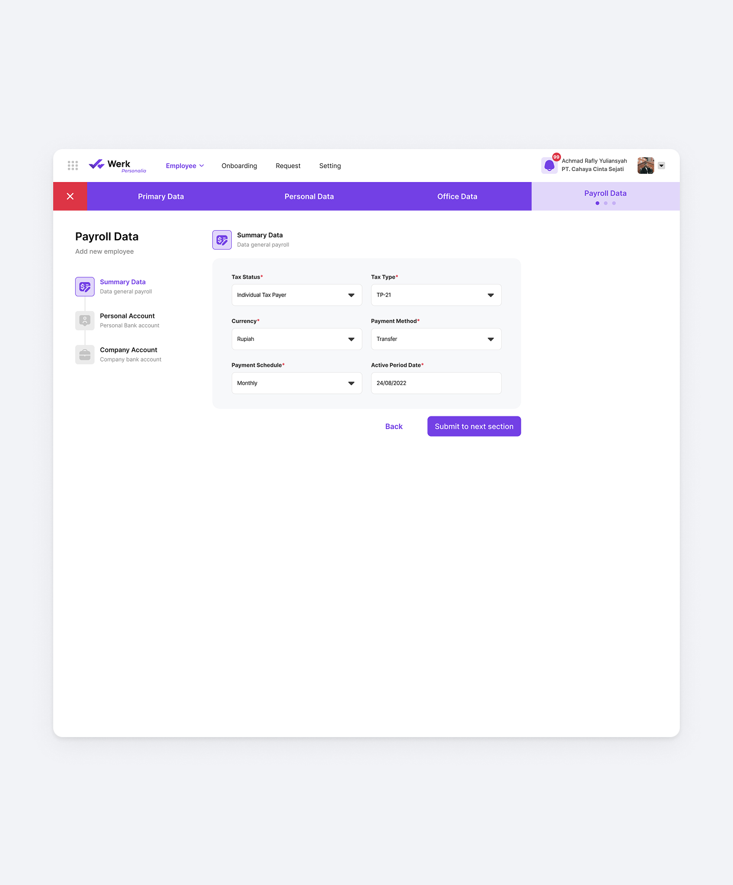
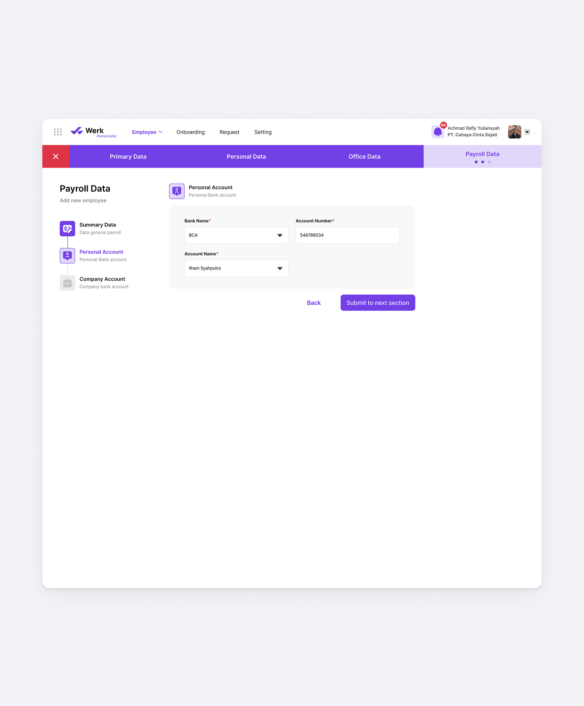
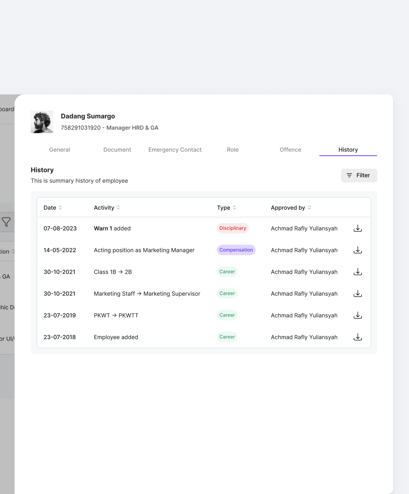
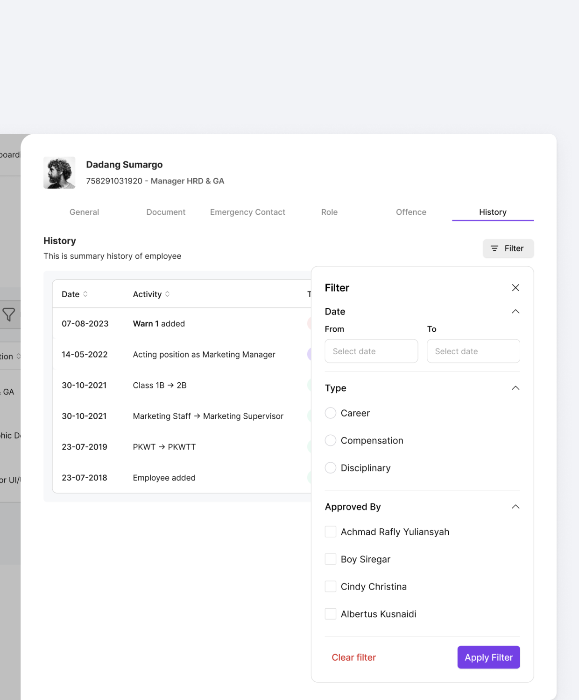
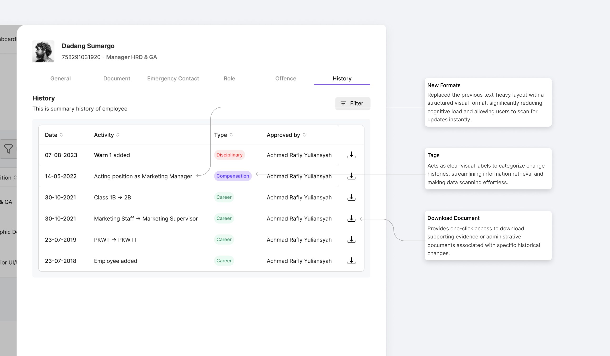
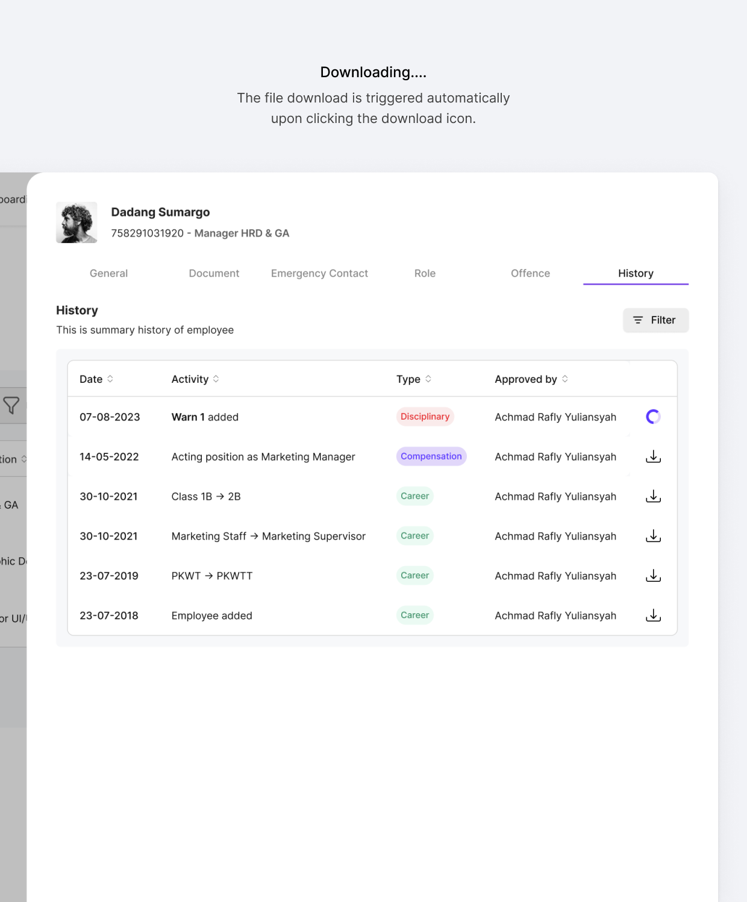
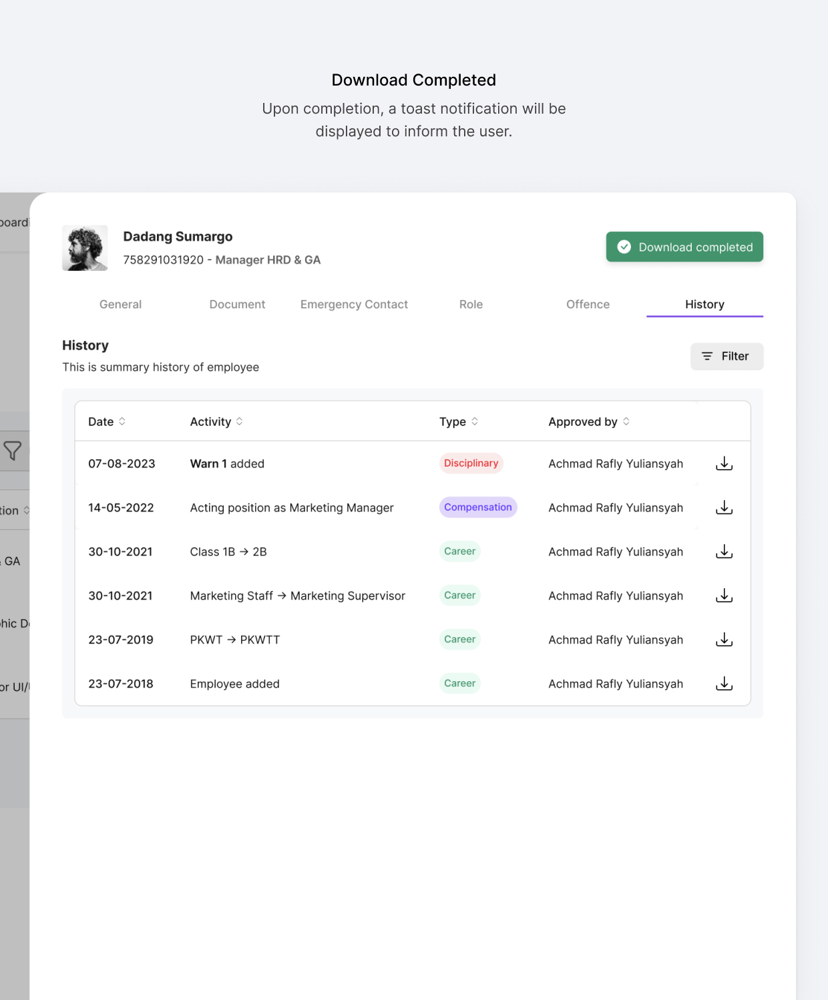

Werk: Personnel Management
Every new hire at a company running fragmented HR systems means the same data gets typed in five times, and every mistake in that process delays onboarding or opens up an access error. Career and disciplinary records scattered across systems made it worse, turning routine compliance audits into a slow, risky exercise.
I redesigned the Personnel module into a centralized automation engine. Single-click onboarding provisions system-wide access instantly, and an immutable audit trail turns compliance checks from a scramble into a lookup.
The Ecosystem Trigger
Traditional onboarding forces HR into redundant data entry across disconnected systems, often leaving new hires without proper access on day one. I turned the static onboarding form into a centralized automation trigger: one HR configuration now provisions the employee’s profile and access rights across the entire Werk ecosystem in a single click.
Progressive Disclosure via Dual-Axis Navigation
A comprehensive onboarding form means capturing a lot of data, which risks overwhelming HR. I addressed this with a dual-navigation system: a horizontal stepper tracks macro-progress across four pillars (Primary, Personal, Office, Payroll), while a vertical sidebar breaks each pillar into digestible sub-categories. HR completes the profile systematically, without getting lost in an endless scroll.


Direct-to-Module Data Mapping
Inputs are grouped not just by category, but by where they land in the Werk ecosystem. Configuring “Attendance Registration” and “Roles” in Primary Data instantly provisions access and dashboard views in ESS. Completing Payroll Data (Tax Status, Payment Schedule, BPJS) builds the employee’s financial profile in the core payroll engine. HR inputs the data once, and the system orchestrates the rest.



The Immutable Audit Trail
Scattered employee records, career moves, disciplinary actions, leave companies exposed during audits without a reliable, tamper-proof timeline. I built a centralized “History” architecture that turns the employee page into an immutable source of truth, separating administrative movements from sensitive disciplinary records for fast retrieval and airtight compliance.
Taxonomy & Rapid Retrieval
To keep the history log readable instead of an overwhelming data dump, each entry gets a color-coded badge (Career, Disciplinary, Compensation), paired with quick-filters. During a time-sensitive audit, HR can isolate Disciplinary actions in seconds, no need to sift through routine updates.


Explicit State Transitions
A log that just says “Role changed to Admin” lacks context. I enriched the Activity column to show both Old and New values (“Role changed from Staff to Admin”), removing ambiguity from the employee’s historical record.

Instant Document Traceability
Critical HR actions, warnings, promotions, are always tied to a signed document. I added an Action/Document column with one-click PDF download, so physical proof is never separated from its digital record.


Outcome
The result is a Personnel module that turns HR from a data-entry bottleneck into a single point of configuration. Onboarding a new hire no longer means typing the same information into five disconnected systems, and access provisioning happens the moment the form is submitted, not days later after IT catches up. When audits or disputes come up, HR isn’t digging through scattered records to reconstruct a timeline. The History architecture already has it: categorized, filterable, and backed by the actual documents tied to each action.